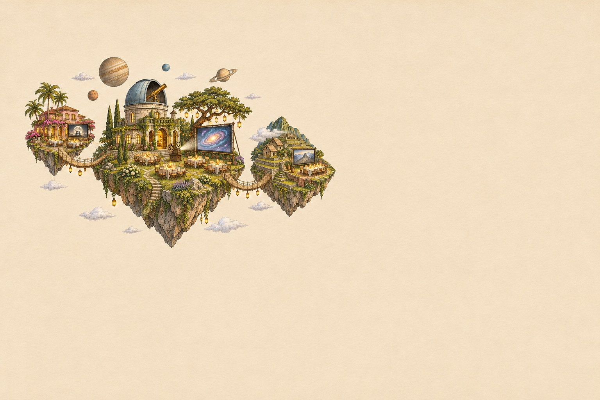

Prossimi eventi
Tre film. Tre isole. Un viaggio da condividere.

Destinazione 01 · Soncino
Barbie
Ristorante Blabla · Soncino
14 settembre Esplora la serata
Destinazione 02 · Lonato del Garda
Interstellar
Ristorante Pippo · Lonato del Garda
15 settembre Esplora la serata
Destinazione 03 · Brescia
Le follie dell’imperatore
Ristorante Cucu · Brescia
16 settembre Esplora la serataEventi di esempio.